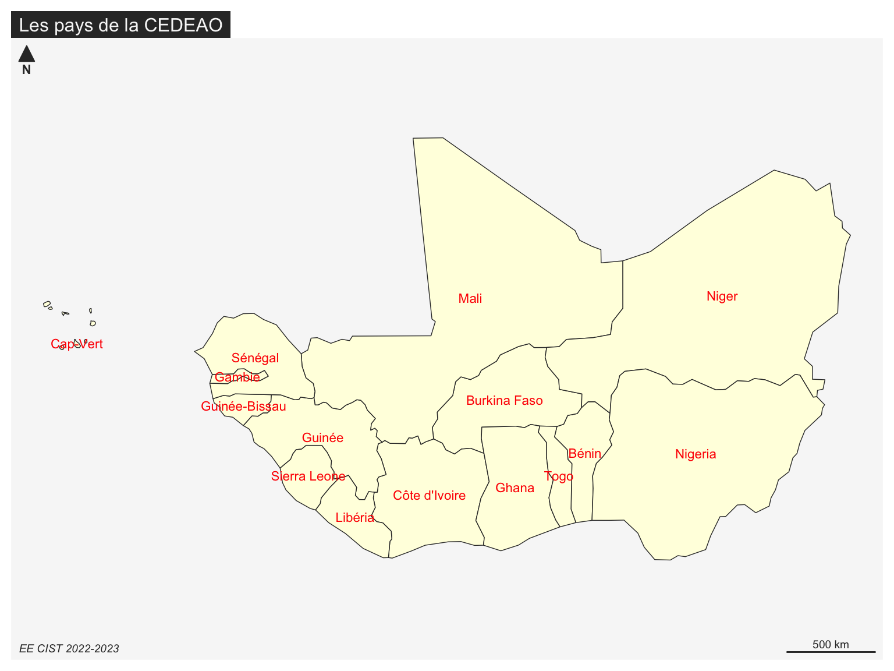
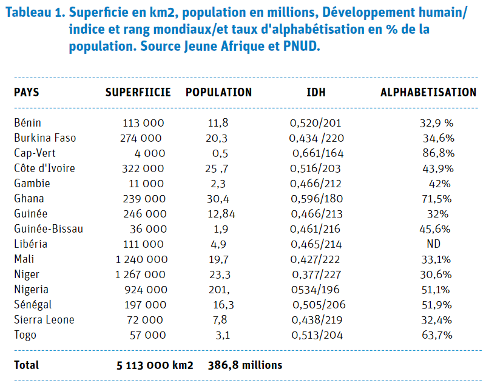
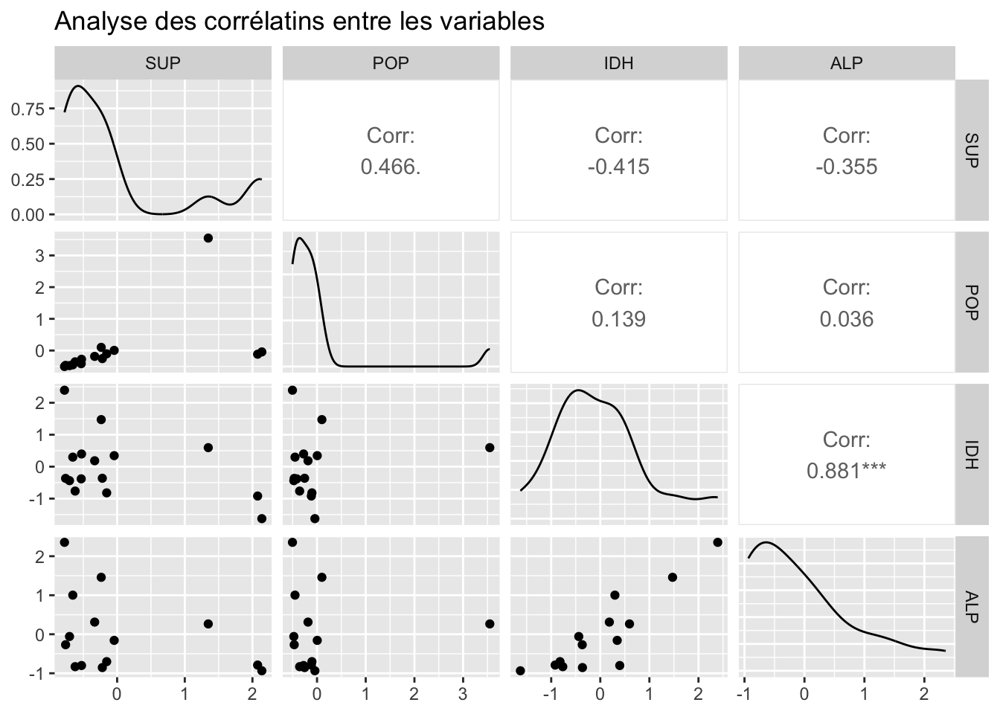
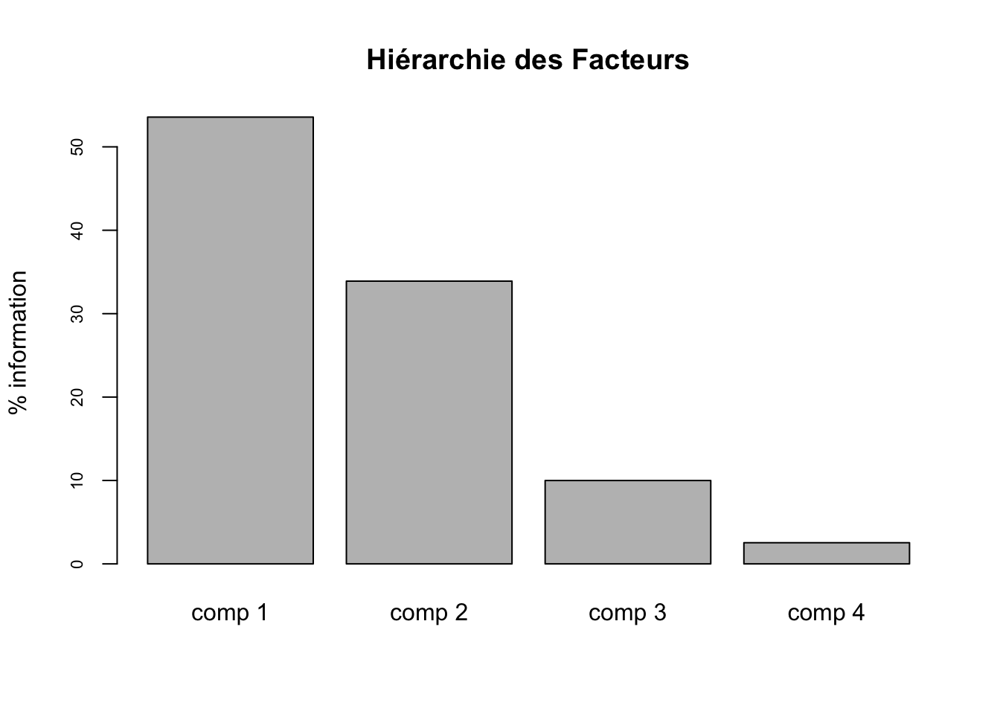
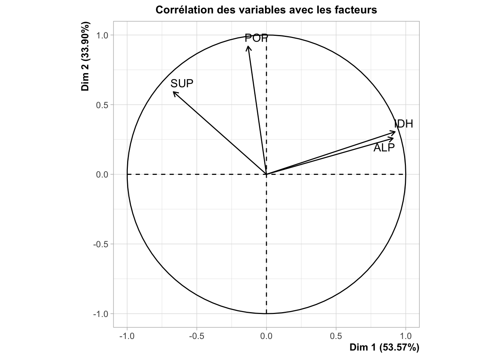
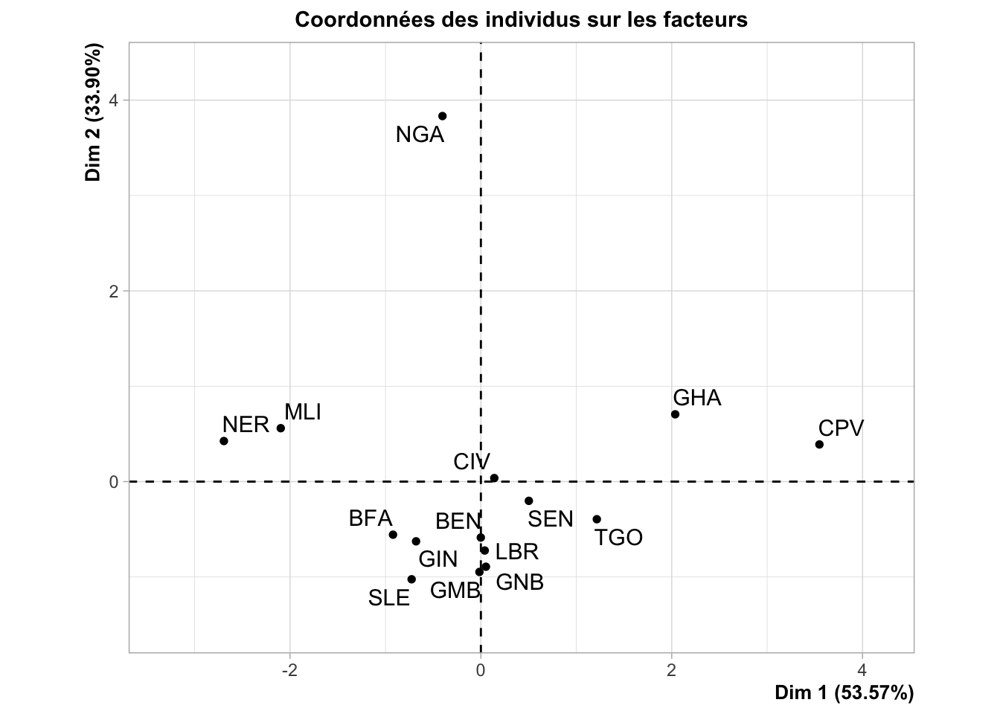
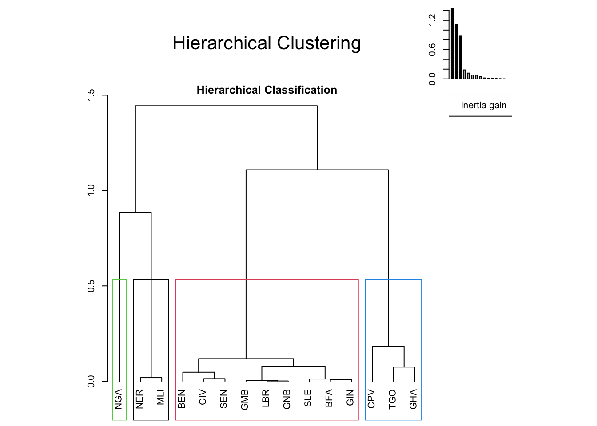
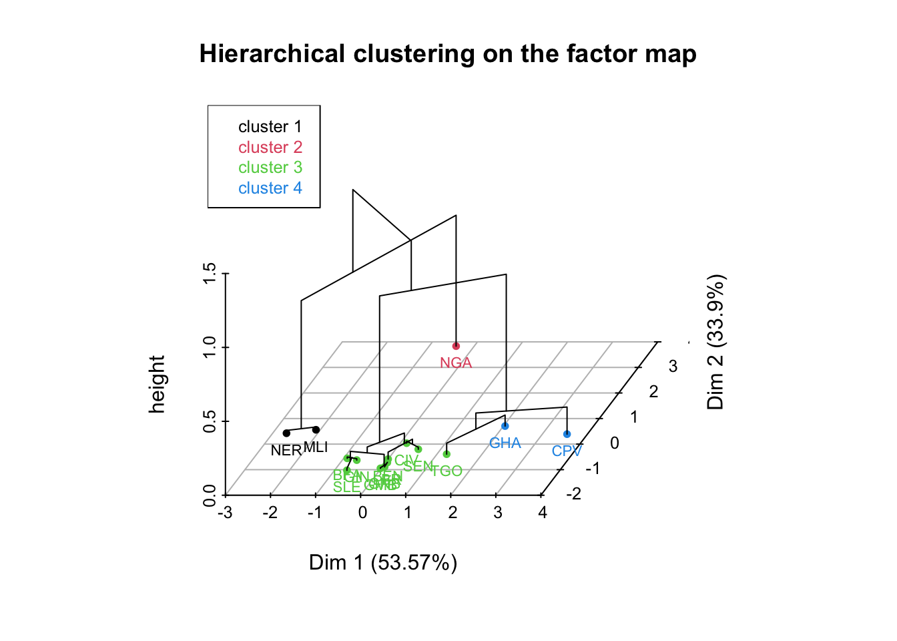
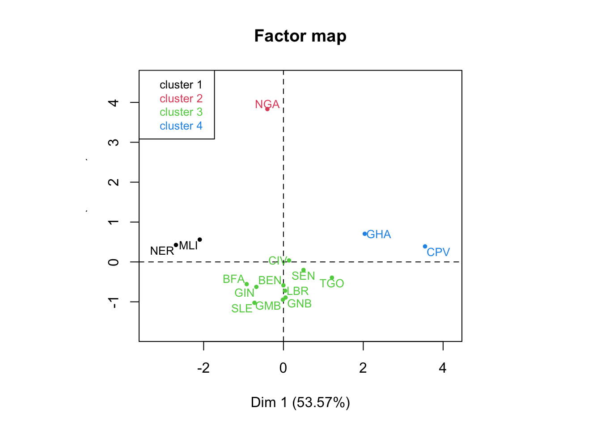

Linking to GEOS 3.11.0, GDAL 3.5.3, PROJ 9.1.0; sf_use_s2() is TRUEEXO : CEDEAO
L’objectif de ce document est de présenter des exemples d’application non technique des méthodes d’analyse factorielle et de classification. Il s’agit donc de faire saisir les objectifs des deux méthodes que l’on peut résumer en première analyse comme suit :
Réduction d’un ensemble de variables à un petit nombre de facteurs qui les résument au mieux. Chaque facteur est composée de variables corrélées entre elles donc partiellement redondantes. En revanche les facteurs sont orthogonaux c’est-à-dire indépendants entre eux.
Réduction d’un ensemble d’individus à un petit nombre de classes qui regroupent les individus les plus ressemblants entre eux et séparent les plus différents.
Nous allons prendre comme terrain d’application un rapport publié en 2021 sur les forces et les faiblesses des pays de la CEDEAO [@vedie2021forces].
L’auteur du rapport, P.H. Vedie cherche à identifier ce qui rapproche et ce qui différencie les pays de la CEDEAO. Il va donc proposer successivemet différents tableaux dont les lignes correspondent aux pays de la CEDEAO et les colonnes aux critères retenus pour examiner les ressemblances et les différences entre ces pays.

Tableau 1 : Taille et développement
Le premier tableau présenté par l’auteur du rapport combine deux variables de stock visant à mesurer la taille des pays et deux variables de rapport visant à évaluer leur niveau de développement :

Préparation des données
Après l’avoir saisi à l’aide d’un tableur,on importe ce tableau dans R afin de pouvoir effectuer des traitements statistiques dessus. On simplifie le nom des variables et on ajoute pour chaque pays un code ISO3 permetant de cartographier éventuellement les résultats de nos analyses.
| Code | Pays | SUP | POP | IDH | ALP |
|---|---|---|---|---|---|
| BEN | Bénin | 113000 | 11.80 | 0.5200 | 32.9 |
| BFA | Burkina Faso | 274000 | 20.30 | 0.4340 | 34.6 |
| CPV | Cap-Vert | 4000 | 0.50 | 0.6610 | 86.8 |
| CIV | Côte d’Ivoire | 322000 | 25.70 | 0.5163 | 43.9 |
| GMB | Gambie | 11000 | 2.30 | 0.4660 | 42.0 |
| GHA | Ghana | 239000 | 30.40 | 0.5960 | 71.5 |
| GIN | Guinée | 246000 | 12.84 | 0.4663 | 32.0 |
| GNB | Guinée-Bissau | 36000 | 1.90 | 0.4610 | 45.6 |
| LBR | Libéria | 111000 | 4.90 | 0.4650 | NA |
| MLI | Mali | 1240000 | 19.70 | 0.4270 | 33.1 |
| NER | Niger | 1267000 | 23.30 | 0.3770 | 30.6 |
| NGA | Nigeria | 924000 | 201.00 | 0.5340 | 51.1 |
| SEN | Sénégal | 197000 | 16.30 | 0.5050 | 51.9 |
| SLE | Sierra Leone | 72000 | 7.80 | 0.4380 | 32.4 |
| TGO | Togo | 57000 | 3.10 | 0.5130 | 63.7 |
Paramètres principaux
Les paramètres principaux des quatre variables permettent de se faire une idée plus précise de la forme de leurs distributions.
| SUP | POP | IDH | ALP | |
|---|---|---|---|---|
| Minimum | 4000 | 0.5 | 0.377 | 30.6 |
| Maximum | 1267000 | 201.0 | 0.661 | 86.8 |
| Médiance | 197000 | 12.8 | 0.466 | 43.0 |
| Moyenne | 340867 | 25.5 | 0.492 | 46.6 |
| Ecart-type | 432928 | 49.5 | 0.071 | 17.1 |
Standardisation du tableau
Les quatre variables présentes dans le tableau sont difficiles à comparer entre elles car elles utilisent différentes unités de mesure. Si l’on veut comparer les pays de la CEDEAO entre eux il est plus simple de commencer par standardiser les variables à l’aide d’une double opération de centrage par la moyenne et de réduction par l’écart-type.
\(X'_i = \frac {X_i - {moy}(X)} {{écart-type}(X)}\)
| SUP | POP | IDH | ALP | |
|---|---|---|---|---|
| BEN | -0.53 | -0.28 | 0.40 | -0.80 |
| BFA | -0.15 | -0.10 | -0.82 | -0.70 |
| CPV | -0.78 | -0.50 | 2.39 | 2.36 |
| CIV | -0.04 | 0.00 | 0.34 | -0.16 |
| GMB | -0.76 | -0.47 | -0.37 | -0.27 |
| GHA | -0.24 | 0.10 | 1.47 | 1.46 |
| GIN | -0.22 | -0.25 | -0.36 | -0.85 |
| GNB | -0.70 | -0.48 | -0.44 | -0.06 |
| LBR | -0.53 | -0.42 | -0.38 | NA |
| MLI | 2.08 | -0.12 | -0.92 | -0.79 |
| NER | 2.14 | -0.04 | -1.63 | -0.94 |
| NGA | 1.35 | 3.55 | 0.59 | 0.26 |
| SEN | -0.33 | -0.19 | 0.18 | 0.31 |
| SLE | -0.62 | -0.36 | -0.76 | -0.83 |
| TGO | -0.66 | -0.45 | 0.30 | 1.00 |
Le tabeau des valeurs standardisées permet de repérer un certain nombre de valeurs exceptionnelles qui sortent de l’intervalle de confiance à 95% [-2 ; +2]. La plus remarquable de ces valeurs exceptionnelles est celle du Nigéria dont la population se situe à 3.55 écarts-type de la moyenne des pays de la CEDEAO. On repère également la très grande superficie du Niger (+2.14) et du Mali (+2.08) par rapport à celles des autres pays. Enfin, on note le caractère exceptionnel du Cap Vert en matière d’IDH (+2.39) et d’alphabétisation (+2.36).
Analyse des corrélations
L’analyse de la matrice des corrélations va nous permettre de savoir si les quatre variables retenues sont redondantes entre elles (forte corrélation positve ou négative) ou bien si elles sont réellement indépendantes (faible corrélation). On utilise ici la fonction ggpairs()du package GGally afin de pouvoir visualiser no seulement les coefficients de corrélation mais aussi leur significativité et la forme du nauage de points associé.

On observe qu’il existe une corrélation positive forte (+0.881) et très significative (p < 0.001) entre les variables IDH et ALP ce qui n’a rien d’étonnnant puisque l’alphabétisation est une des trois composantes de l’Indicateur de Développement Humain. Par contre on ne trouve pas d’autres corrélations significatives entre les autres indicateurs. Il y a certes une corrélation positive entre population et superficie (+0.466) mais sa significativité est faible en raison des exceptions constituées par le Mali et le Niger qui ont une population faible relativement à leur superficie. On note enfin une relation négative assez forte entre superficie et IDH (-0.415), sans doute explicable par le retard de développement des pays enclavés du Sahel, mais sa significativité demeure faible.
Analyse en composante pricipale (ACP)
L’analyse en composante principale nous permet de réduire le nombre de variable en regroupant entre elles les plus corréllées positivement ou négativement. On cherche donc à identifier des “super-variables” qui résument plusieurs autres à la fois.
Valeurs propres
Au départ chacune de nos quatre variables représente 25% de l’information totale du tableau puisque nous les avons standardisées pour leur donner des contributions égales. Quelle est la part de l’information totale que représentent les facteurs mis à jour par l’ACP ?

| Valeur propre | % variance | % variance cumulée | |
|---|---|---|---|
| comp 1 | 2.14 | 53.57 | 53.57 |
| comp 2 | 1.36 | 33.90 | 87.47 |
| comp 3 | 0.40 | 9.99 | 97.46 |
| comp 4 | 0.10 | 2.54 | 100.00 |
- Le premier facteur résume à lui seul plus de la moitié de l’information (53.6%) ce qui veut dire qu’il résume l’équivalent de plus de deux des variables de départ (ce qu’exprime sa valeur propre de 2.14).
- Le second facteur résume quant à lui 33.9% de l’information, ce qui est plus que l’une des variables de départ et lui donne une valeur propre de 1.36.
A eux deux, ces facteurs résument donc 87.5% de l’information contenue dans le tableau et sont donc suffisant pour nous livrer l’essentiel des résultats importants sur la taille et le développement des pays de la CEDEAO. Les facteurs 3 et 4 ont d’ailleurs des valeurs propres très inférieur à 1 ce qui signifie qu’il n’apportent plus que des renseignements secondaires.
Corrélation des variables avec les facteurs
Nous allons maintenant visualiser la corrélation de chacune des variables avec les facteurs afin de pouvoir les interpréter.

Le premier facteur est très fortement corrrélé positivement avec les variables IDH et Alphabétisation et exprime donc le niveau général de développement des pays de la CEDEAO. La variable population est orthogonale au premier facteur, ce qui signifie qu’il n’y a aucune relation entre le niveau de développement et la population des pays. En revanche la variable superficie est légèrement corrélée négativement avec ce premier axe, ce qui est lié au fait que les grands pays du Sahel (Mali, Niger) sont aussi ceux qui ont les niveau d’IDH et d’alphabétisation parmi les plus faibles.
Le second facteur est très fortement corrélé avec la population ainsi que - mais à un moindre degré - avec la superficie des pays. Il exprime donc la taille globale des pays à partir d’une combinaison de deux variables.
L’interprétation des deux facteurs est ici très simple car l’auteur du tableau avait manifestement choisi ses variables pour combiner des effets de taille (2 critères) et de développement (2 critères). Mais lorsque les tableaux sont plus complexes, il peut être utile de recourrir à des outils d’analyse plus précis du type du tableau ci-dessous que nous ne détaillerons pas dans l’immédiat.
| Corrélation (F1) | Contribution (F1) | Cosinus2 (F1) | Corrélation (F2) | Contribution (F2) | Cosinus2 (F2) | |
|---|---|---|---|---|---|---|
| SUP | -0.668 | 20.8 | 0.447 | 0.592 | 25.9 | 0.351 |
| POP | -0.132 | 0.8 | 0.017 | 0.919 | 62.3 | 0.845 |
| IDH | 0.923 | 39.8 | 0.852 | 0.305 | 6.9 | 0.093 |
| ALP | 0.909 | 38.6 | 0.826 | 0.259 | 4.9 | 0.067 |
Coordonnées des individus sur les facteurs
Maintenant que nous avons sélectionné nos facteurs et que nous leur avons donnée une interprétation, nous pouvons analyser la position des pays de la CEDEA par rapport à ces deux super-variables.

- La position du Nigéria au sommet de l’axe 2 résulte naturellement de sa population exceptionellement forte par rapport à celle des autres pays. Son éloignement par rapport aux autres points ne fait que restituer de façon géométrique ce que nous avions observé à l’aide du tableau des valeurs standardisés.
- Les pays situés à droite du graphiques (Cap Vert, Ghana) sont ceux qui ont les plus forts niveaux d’IDH et les plus forts niveaux d’alphabétisation.
- Les pays situés à gauche du graphique (Mali, Niger) sont au contraire ceux qui ont les plus faibles niveaux de développement combinée avec une superficie importante.
- Les pays situés autour du centre du graphique sont ceux dont les caractéristiques sont assez proches de la moyenne des pays de la CEDEAO. Le pays le plus typique est de ce point de vue la Côte d’Ivoire qui est positionnée pratiquement au croisement des deux axes. Il reste néanmoins possible d’analyser les différences internes au “paquet” central. Par exemple la Gambie ou la Sierra Léone sont situées plus pas que le Sénégal ou le Bénin car elles ont une population plus petite. Le Burkina Faso est situé plus à gauche que le Togo car il a un IDH et une alphabétisation plus faible.
Comme dans le cas des variables, on peut utiliser un tableau plus détaillé afin d’interpréter la position des pays sur les axes et leur contribution à la création de ces derniers :
| Coordonnées (F1) | Contribution (F1) | Cosinus2 (F1) | Coordonnées (F2) | Contribution (F2) | Cosinus2 (F2) | |
|---|---|---|---|---|---|---|
| BEN | -0.001 | 0.0 | 0.000 | -0.586 | 1.7 | 0.267 |
| BFA | -0.921 | 2.6 | 0.639 | -0.557 | 1.5 | 0.233 |
| CPV | 3.548 | 39.2 | 0.936 | 0.390 | 0.7 | 0.011 |
| CIV | 0.140 | 0.1 | 0.125 | 0.037 | 0.0 | 0.009 |
| GMB | -0.015 | 0.0 | 0.000 | -0.947 | 4.4 | 0.827 |
| GHA | 2.037 | 12.9 | 0.855 | 0.706 | 2.4 | 0.103 |
| GIN | -0.679 | 1.4 | 0.418 | -0.626 | 1.9 | 0.355 |
| GNB | 0.053 | 0.0 | 0.003 | -0.892 | 3.9 | 0.809 |
| LBR | 0.040 | 0.0 | 0.003 | -0.723 | 2.6 | 0.812 |
| MLI | -2.097 | 13.7 | 0.703 | 0.560 | 1.5 | 0.050 |
| NER | -2.693 | 22.6 | 0.829 | 0.425 | 0.9 | 0.021 |
| NGA | -0.403 | 0.5 | 0.010 | 3.833 | 72.2 | 0.925 |
| SEN | 0.503 | 0.8 | 0.832 | -0.202 | 0.2 | 0.134 |
| SLE | -0.726 | 1.6 | 0.267 | -1.024 | 5.2 | 0.532 |
| TGO | 1.215 | 4.6 | 0.763 | -0.394 | 0.8 | 0.080 |
Classification Ascendante Hiérarchique (CAH)
On peut poursuivre l’analyse en réalisant une classificiation des pays en fonction de leur ressemblance selon le critère de Ward.


